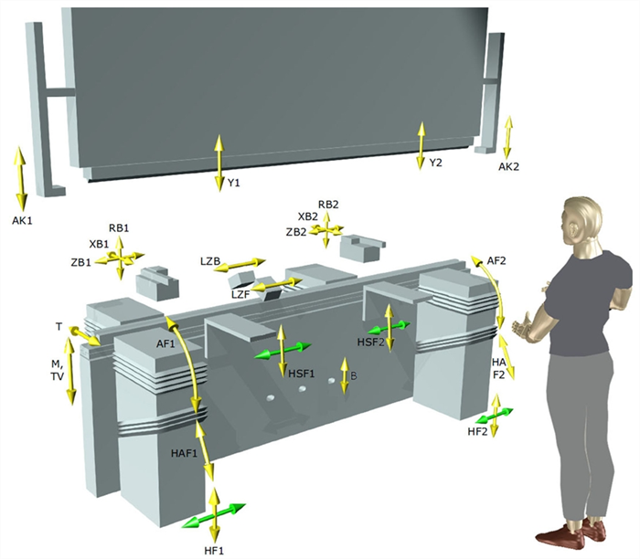
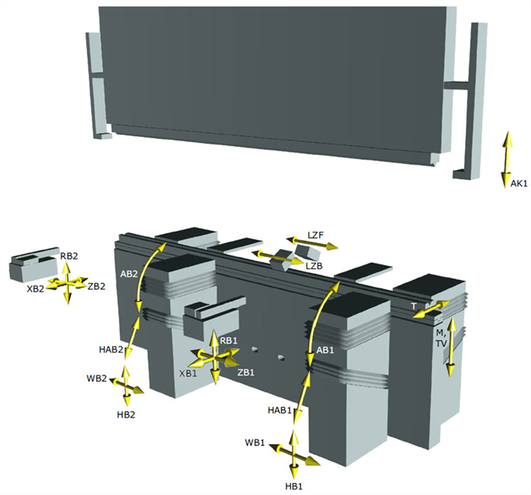

Les axes disposés devant les outils reçoivent également un F pour leur nom. Si plusieurs axes de même type sont présents, leur nom est complété par un numéro d'ordre (1,2,3).

Les axes disposés derrière les outils reçoivent par ailleurs un B pour leur nom. Si plusieurs axes de même type sont présents, leur nom est complété par un numéro d'ordre (1,2,3).
